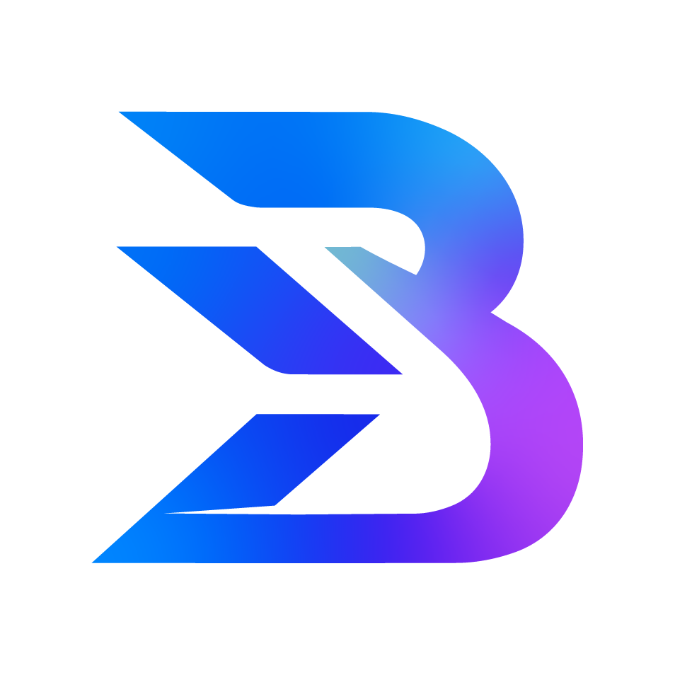

Custom Software Development
- Custom business software
- Enterprise systems
- Web applications
- Mobile applications
- Digital platforms
Technology & engineering company
We design, develop and integrate technology solutions that help businesses grow, modernize and operate better.

Start here
Every engagement starts from a business problem, not from a technology. Select the one that sounds like yours and follow where it routes.
Solutions
Most engagements are delivered through one of three primary practices. Infrastructure and consulting run underneath them, supporting everything we put into production.
Case studies
Engineering work in production for cooperatives, universities and enterprise operations in Costa Rica.
Coopebanacio R.L.
Members were transacting with each other outside the cooperative, with no institutional digital channel and strict national data-protection requirements to satisfy.
A hybrid architecture: an edge-delivered frontend with an Azure backend, a PostGIS geospatial engine for proximity search, and Zero-Trust access combining OAuth providers with a second-factor OTP.
A marketplace operating at sub-second edge delivery (<1.2s P95) with a compliance model aligned to Costa Rica's Law 8968. Integrated payments are the phase currently in progress.
Universidad FUNDEPOS
There was no unified way to monitor sustainable development indicators across Costa Rican territories, and the platform had to stay usable on limited connectivity.
A server-first platform built on Next.js 15 and React 19 Server Components, with progressive streaming for heavy technical documents and content decoupled for a later database migration.
55% less JavaScript shipped to the client and a sub-second initial load, on an architecture already prepared for Azure Big Data and analytics phases.
Coopebanacio · Quarzo Sistemas
Commercial data lived in HubSpot while financial and operational data lived in a CODEAS ERP on MS SQL Server, forcing manual double entry and hiding the real state of the pipeline.
A bidirectional synchronization engine in Python that maps 260+ custom properties, writes in batches with integrity guarantees, and handles rate limiting adaptively.
Over 10,000 records synchronized on a scheduled run, with a 100% success rate on custom-property writes and 50% faster execution than the prior approach.
How BRILER works
One continuous movement. Scattered requirements become an architecture, the architecture becomes an engineered system, and the system reaches production.
We start from the business problem and what it actually costs.
Scope, architecture and the decisions that constrain the build.
Engineering, integration and the work of making it hold together.
Deployment, operation and the handover into real use.
Technical depth
These are not separate service lines. They are the parts of a single system that we design, connect and operate together.

About BRILER
BRILER combines engineering, consulting and technology infrastructure to solve real business needs, from Costa Rica to the United States and Spain.
Let's talk
Tell us the problem. We'll help determine the technology needed to solve it.